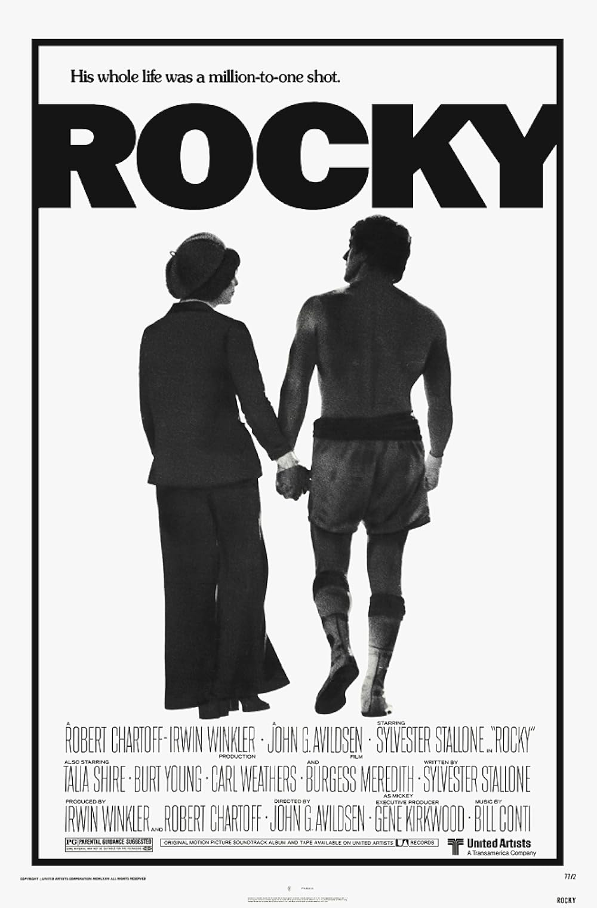

Rocky
49th Academy Awards
(Oscars 1977)
10 Nominations, 3 Awards
| Nominations | ||
|---|---|---|
| Category | Nominees | Result |
| Best Picture | Irwin Winkler and Robert Chartoff | Won |
| Actor in a Leading Role | Sylvester Stallone | Nominated |
| Actress in a Leading Role | Talia Shire | Nominated |
| Actor in a Supporting Role | Burgess Meredith | Nominated |
| Actor in a Supporting Role | Burt Young | Nominated |
| Directing | John G. Avildsen | Won |
| Writing (Screenplay Written Directly for the Screen--based on factual material or on story material not previously published or produced) | Sylvester Stallone | Nominated |
| Film Editing | Richard Halsey and Scott Conrad | Won |
| Sound | Bud Alper, Harry Warren Tetrick, Lyle Burbridge, and William McCaughey | Nominated |
| Music (Original Song) "Gonna Fly Now" |
Ayn Robbins, Bill Conti, and Carol Connors | Nominated |